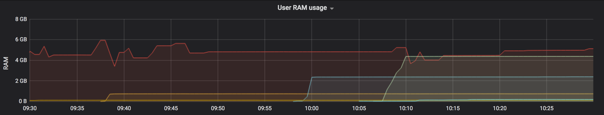

Part 14 Annexes
14.1 Memory limits
All the software running on the Analytical Platform has its memory controlled. Each running software container has a minimum and maximum amount available. Here’s an explanation of the key terms:
- ‘memory’ is needed for your app and code, but the limiting factor is usually the data that you ‘load into memory’. Data is in memory if it is assigned to a variable, which includes a data frame.
- a ‘container’ is for one user’s instance of a tool (e.g. Sandra’s R Studio or Bob’s Jupyter) or app (e.g. the PQ Shiny App or the KPIs Web App).
- ‘Minimum memory’ is the amount the container is guaranteed. It is reserved for it.
- ‘Maximum memory’ may be available, but your container is competing for this memory with other containers on the server it happens to be running on. If you try to use more than is available or more than the Maximum then your container will be restarted.
e.g. Sandra runs her code in R Studio, which loads 8GB of data into a data frame, and she sees in Grafana that this takes 10GB of memory. This is above the minimum of 5GB, and because the servers aren’t too busy the extra 5GB are available. Later the server that her R Studio container is running on happens to get full and when she tries to do something that needs another 1GB memory (i.e. total 11GB) she finds that R Studio restarts, interrupting her work for a few minutes. She restarts her code, but because her R Studio now happens to be running on a different server that is less busy, she finds she can run her code and use 11GB fine.
You can monitor your memory usage using Grafana (there is also a link from the Control Panel). Scroll down to “User RAM usage” and you can click on your name to just show yours. Also useful is to adjust the time period from being the “Last 1 hour”, by clicking on the label at the top-right corner.

Current memory limits:
| Container type | Minimum | Maximum |
|---|---|---|
| R Studio | 5 GB | 20 GB |
| Jupyter | 1 GB | 12 GB |
| App | no limit | no limit |
You can work on a dataset that is bigger than your memory by reading in a bit of the data at a time and writing results back to disk as you go. If you’re working on big data then consider taking advantage of tech like Amazon Athena or Apache Spark, which are available through the Analytical Platform too.
Our laptops tend to have only 8GB or 16GB, so it’s an advantage of the AP that we can offer more. We are open to increasing the maximum memory, so let us know if you need more, to help us make a case for covering the additional cost.
14.2 What are the benefits of Github and why do we recommend it?
Github is a central place to store our analytical projects - particularly those which are built primarily in code.
Github keeps track of who wrote what, when, why they wrote it, why we can trust its correctness, and which version of the code was run to produce an analytical result.
This is useful if you’re work on your own, but the benefits are greatest when you’re working in a team.
Here is some more details of what Git offers:
It provides a single, unambigous master version of a project. No more
model_final.r,model_finalv2_final.r. etc.It enables you and collaborators to work on the same project and files concurrently, resolving conflicts if you edit the same parts of the same files, whilst keeping track of who made what edits and when.
It enables work in progress to be shared with team members, without compromising the master version. You never get confused between what’s not yet final, and what’s trusted, quality assured code. The work in progress can be seemlessly merged into the master version when it’s ready.
It provides a history of all previous versions of the projects, which can be meaningfully tagged, and reverted to (undo points). e.g. we may wish to revert to the exact code that was tagged ‘model run 2015Q1’.
It reduces the likelihood of code being lost in messy file systems, such as on DOM1. Files sits within defined project ‘repositories’, with all code accessible from this location.
It provides an extremely powerful search function. The ability to search all code written by Ministry of Justice analysts in milliseconds. Or all code written by anyone, for that matter.
It enables an easier, more robust, more enjoyable approach to quality assurance. In particular, it offers the potential to continuously quality assure a project as it’s built, rather than QA being an activity that’s only done once the work is complete. For example, all additions to the codebase can be reviewed and accepted by a peer before being integrated into the master version.
It includes productivity tools like Github issues (essentially a tagged to-do list), and a trello style workflow (Github projects), with automation.
Git stores a huge amount of meta data about why changes were made and by whom. This dramatically reduces the danger of code becoming a ‘black box’. The to-do list is automatically linked to the implementation - e.g. The issue of ‘improve number formatting’ is automatically linked to the specific changes in the code that fixed the number formatting.
It makes it much easier to build reusable components, and make parts of our code open source (available to the public). For example, we use R code written by statisticians around the world that’s been put on Github, and we know that people across government have been using some of our R code. We can collaborate easily with other government deparments and anyone else for that matter.
It makes it easier to ask for help with your work, particularly with colleagues who are working remotely. You can hyperlink and comment on specific lines of code.
You can write rich, searchable documentation - e.g. this user guide is hosted on Github!
Finally, we have chosed git specifically because it seems to be by far the most popular version control system - see here and here
14.3 Step by step guide to setup Two Factor Authentication
Two factor authentication (2FA) is critical to the security of the platform. We have opted to use smartphone based 2FA apps due to the expense of giving out hardware tokens like the RSA device you use to log into DOM1.
Note that there are two layers of two factor authentication (2FA) in action on the platform:
Github Account 2FA Your Github account must have 2FA enabled. When you log in to Github, your session will stay active for a month before you need to re-enter your 2FA code. Your Github username identifies you to the platform, and we use this identity to control access to data and other resources once you’ve logged into the platform. You therefore must be logged into Github to use the platform.
Analytical Platform 2FA Your Analytical Platform account has a separate 2FA step. You will be prompted to set this up the first time you access the platform. This code must be entered once a day. This security step lets you log into the platform and use it.
Usually, when you log into the platform, you will be prompted to enter your platform 2FA, but you will not need to enter your Github 2FA because this is remembered for a month.
However, if you have not logged into the platform for more than a month, you will first have to login to Github (and enter your Github 2FA code), and you will then also be prompted to enter your platform 2FA code.
14.3.1 Step by step - logging into the platform for the first time
The first time you log into the Analytical Platform, you will be asked to set up 2FA.
Your welcome email will direct you to the platform Control Panel.
14.3.1.1 Step 1: Log into Github to identify yourself to the Analytical Platform

If you’re already logged into Github, you will not see the ‘Sign in to GitHub to continue to Analytics platform’ screen.
14.3.1.2 Step 2: Set up your Platform 2FA using your smartphone
In this step, you set up the second layer of 2FA, your Platform 2FA.
Scan the code using your smartphone app, and enter the code that comes up on your smartphone.
Note: If you get the error ‘Wrong or expired code’, you need to make sure that your phone’s clock is accurate. See here

14.3.1.3 You’re now done
Once you’re entered your platform 2FA code in the interface above, you should now have access to the platform. You will need to enter your platform 2FA code around once a day as you use the platform.
14.4 Data Minimisation
In order to reduce cybersecurity/information risks to data and promote/maintain a privacy-centered approach you should consider how data can be minimised or obfuscated before being imported if you can do so while maintaining analytical usefulness and data integrity.
14.4.1 Pseudonymisation
Pseudonymisation is “…the processing of personal data in such a manner that the personal data can no longer be attributed to a specific data subject without the use of additional information…”
An example of pseudonymisation would be replacing the name of an individual with a unique hashed value. This would preserve the concept of an individual person but would mean their name is not stored in the Analytical Platform when it is not directly needed.
This is pseudonymisation as the Analytical Platform with the data that it now holds can no longer identify that person without other data that it likely does not have.
14.4.2 Anonymisation
Anonymisation is “…information which does not relate to an identified or identifiable natural person or to personal data rendered anonymous in such a manner that the data subject is not or no longer identifiable [even when joined with other accessible data]…”
Under current data protection legislation, true anonymisation is quite hard to achieve but should be considered.
An example of anonymisation would be using summary values such as where there are 1000 unique ‘users’ in your database, the Analytical Platform held data only holds the ‘1000’ information, not each individual user record.
This is anonymisation as the Analytical Platform with the data that it now holds can no longer identify any person at all, as it will be mathematically impossible to use the number ‘1000’ to identify any individual.